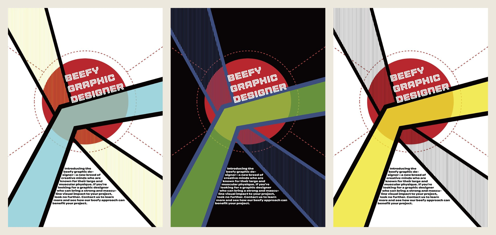

Based in London / Available now
Service design / research / visual design
I research complex services and turn findings into clear, testable proposals.
I am Wuyuan Gao. I completed an MDes in Design Innovation and Service Design at the Glasgow School of Art in September 2026, after a BDes (Honours) in Graphic Design at OCAD University.
I interview people, map what they actually do, and build working prototypes to test with them. I also trained as a graphic designer: my typography, poster and information design work is on the Visual work page.
Research and synthesisService designJourney designWorking prototypesVisual communication
Selected work / 2025-2026
Four projects showing how research informed each design decision.

01
Small-business service research / 2026
Small-business owners were preparing invoices and VAT papers themselves before their accountant saw them. I built a simulation of a service that does that preparation and tried it with one co-owner.
Field research / Synthesis / Service design / Browser prototyping / Prototype trial
Read full case study →
02
Financial services collaboration / 2026
Street interviews for Scottish Widows showed why people stop before asking for a life-insurance quote. I designed one of the two prototypes behind the team's final website.
Qualitative research / Synthesis / Journey design / Interaction design / Browser prototyping
Read full case study →
03
Heritage learning service / 2025
A no-login browser game and a printed teacher guide for a short classroom session on heritage. I fixed the failures found in two playtests.
Service design / Inclusive learning / Multidisciplinary collaboration / Interaction testing / Technical feasibility
Read full case study →04 / Systems study
Myco-Care
A concept for neighbours to exchange help through a community centre and stairwell lockers, with rules borrowed from how fungal networks share resources.
Read systems study →
05 / Graphic design
Visual work
Book typesetting, a poster series, information graphics, a data animation and a brand and app concept from my graphic design degree.
See visual work →
About
Research, visual communication and working prototypes.
My background combines service-design research with visual communication and browser prototyping. I build prototypes with AI coding assistance; the research, flows and interface decisions are mine. I separate observations, assumptions and open questions, then use them to decide what should be designed and tested next.
I am based in London and available now. I am interested in graduate, junior and associate roles across service design, design research, product and UX design, and graphic design.
2025-2026Glasgow School of Art
MDes Design Innovation and Service Design, awarded September 2026
2021-2025OCAD University
Bachelor of Design (Honours), Graphic Design
ExperienceNanjing Yindu Ogilvy Advertising / Intern Graphic Designer
Vehicle graphics, student-facing campus posters, a bar logo and basketball-event posters using Illustrator and Photoshop. May to August 2023.
ExperienceNanjing Jinguo Graphics / Intern Graphic Designer
Hospital-event brochures and product-instruction layouts using Illustrator. August to November 2023.
AvailabilityAvailable now for full-time, fixed-term and part-time roles in London.